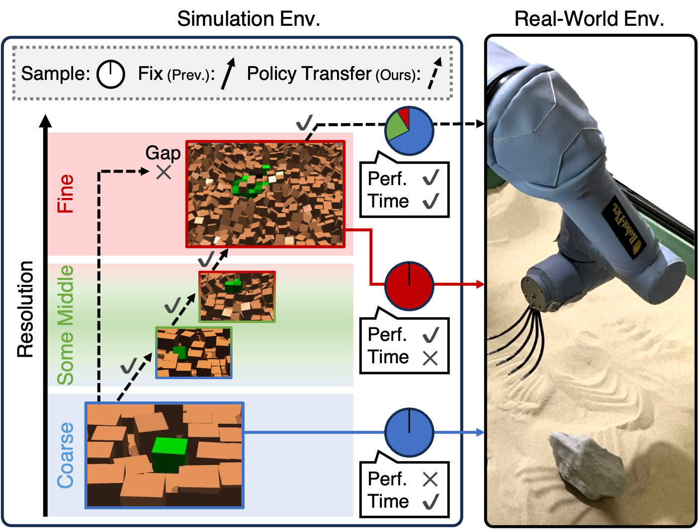
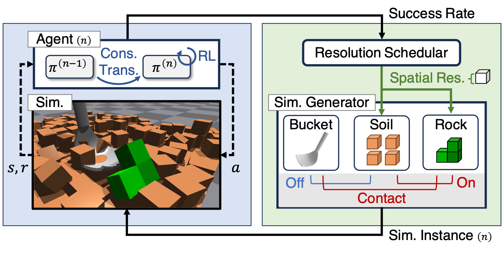
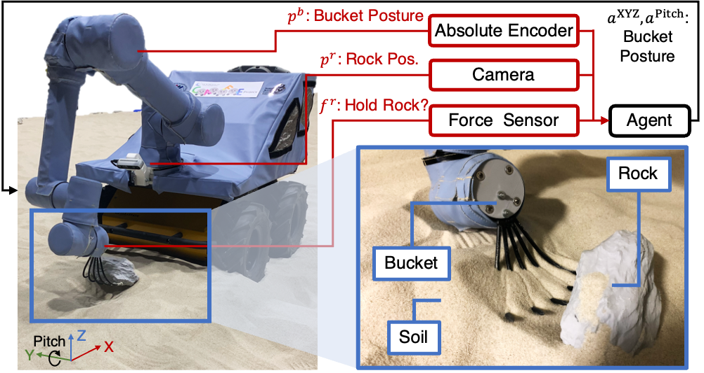
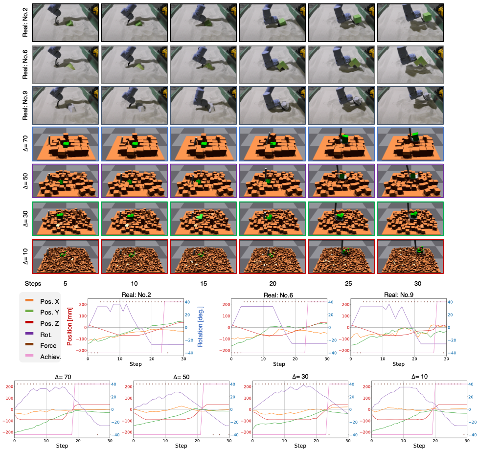

Watch Video
Watch Video
 View Paper
View Paper
Abstract
In earthwork and construction, excavators often encounter large rocks mixed with various soil conditions, requiring skilled operators. This paper presents a framework for achieving autonomous excavation using reinforcement learning (RL) through a rock excavation simulator. In the simulation, resolution can be defined by the particle size/number in the whole soil space. Fine-resolution simulations closely mimic real-world behavior but demand significant calculation time and challenging sample collection, while coarse-resolution simulations enable faster sample collection but deviate from real-world behavior. To combine the advantages of both resolutions, we explore using policies developed in coarse-resolution simulations for pre-training in fine-resolution simulations. To this end, we propose a novel policy learning framework called Progressive-Resolution Policy Distillation (PRPD), which progressively transfers policies through some middle-resolution simulations with conservative policy transfer to avoid domain gaps that could lead to policy transfer failure. Validation in a rock excavation simulator and nine real-world rock environments demonstrated that PRPD reduced sampling time to less than 1/7 while maintaining task success rates comparable to those achieved through policy learning in a fine-resolution simulation.
Method Overview
The following figure illustrates the method overview for Progressive-Resolution Policy Distillation. Fine-resolution simulations yield high policy performance but require long learning times, while coarse-resolution simulations allow for quick learning but perform poorly in sim-to-real transfer. Our framework starts with coarse-resolution simulations for quick learning and progressively transfers policies to fine-resolution simulations. Progressive resolution shift with conservative policy transfer is applied to avoid large domain gaps that could lead to policy transfer failure. This approach balances learning time with real-world performance.
Algorithm and Parameters
The algorithm and parameter settings for the proposed approach are provided as below:
Table I: Learning Parameters of PRPD in Experiments
$$ \begin{array}{ll{5.5cm}l} \hline \textbf{Para.} & \textbf{Meaning} & \textbf{Value} \\ \hline \alpha_0 & \text{Scaling coefficient of distillation} & 2 \\ \gamma & \text{Discount factor of RL} & 0.99 \\ \Delta_{1} & \text{Scale of initial resolution [mm]} & 70 \\ \Delta_{N} & \text{Scale of final resolution [mm]} & 10 \\ \Delta_{\mathcal{R}} & \text{Scale of resolution interval [mm]} & 10 \\ \hat{\tau} & \text{Target success rate} & 0.95 \\ T & \text{Number of steps per episode} & 128 \\ E & \text{Number of episodes per iteration} & 128 \\ I & \text{Maximum number of iterations} & 400 \\ \epsilon & \text{Cliping parameter of PPO} & 0.2 \\ & \text{KL divergence penalty of PPO} & \text{adaptive} \\ \hline \end{array} $$
Table II: Range of Randomized Parameters in the Rock Excavation Simulator
$$ \begin{array}{lccc} \hline \textbf{Parameter} & \textbf{w/o DR} & \textbf{min} & \textbf{max} \\ \hline \text{Obs. of Rock pos. noise (XY) [mm]} & 0 & -25 & 25 \\ \text{Obs. of Rock pos. bias (XY) [mm]} & 0 & -25 & 25 \\ \text{Error rate of rock in bucket [⋅]} & 0 & 0.2 & 0.2 \\ \text{Ground height bias [mm]} & 0 & -25 & 25 \\ \text{Init. bucket pos. bias (XYZ) [mm]} & 0 & -300 & 300 \\ \text{Init. rock pos. bias (XYZ) [mm]} & 0 & -30 & 30 \\ \text{Bucket torque weight (XYZ) [⋅]} & 1 & 0.8 & 1.2 \\ \text{External force to rock [N]} & 0 & 0 & 1 \\ \text{Friction coefficient [⋅]} & 1 & 0.8 & 1.2 \\ \text{Total soil mass [kg]} & 3 & 2.7 & 3.3 \\ \text{Total rock mass [kg]} & 1 & 0.8 & 1.2 \\ \text{Total soil volume } [\text{mm}^3] & 125^3 & 120^3 & 130^3 \\ \text{Total rock volume } [\text{mm}^3] & 50^3 & 45^3 & 55^3 \\ \hline \end{array} $$
The parameters were used for learning policies with DR and sampled from the uniform distribution. "XY" and "XYZ" denote whether only the horizontal direction or the vertical direction is included, respectively.
Pseudo Code of Proposed Framework
Simulation Settings
The following figure illustrates applying PRPD to our rock excavation simulator. The resolution scheduler progressively changes the simulation resolution. The simulation generator creates the environment (soil, rocks, bucket) at this resolution. At each resolution, agents collect samples and update policies.
Real-World Settings
The following figure illustrates our experimental rock excavation setup. The excavator operates a bucket attached to its arm to remove rocks from the soil. Inputs to the control policy include the bucket's posture \(p^b\) (position and rotation) from the excavator's absolute encoder, rock coordinates \(p^r\) estimated by the camera, and the presence of rocks in the bucket \(f^r\) estimated by the force sensor. The output of the control policy is the position \(a^{\text{XYZ}}\) and rotation of the bucket \(a^{\text{Pitch}}\). The fork-shaped bucket is designed to imitate the features of skeleton buckets.
Results
The following figure illustrates trajectories of robot's snapshots and observation in excavation. Top: The upper two rows and lower four rows of the snapshots are environment seen of the real world and simulation, respectively. Simulation observations are randomized by domain randomization. Bottom: These plots show trajectories from \( \Delta=70 \) to \( \Delta=10 \) learned by PRPD. "Pos. X", "Pos. Y", and "Pos. Z" mean the relative position between the bucket and the rock. "Rot." means bucket rotation. "Force" means the force function output. "Achiev." means whether the policy achieves the task or not.
Summaries
In this paper, we propose time-efficient RL framework PRPD to address the time inefficiency of a fine-resolution rock-excavation simulator. We evaluated PRPD by developing a variable-resolution rock-excavation simulator using Isaac Gym. PRPD significantly reduced policy learning time in the simulator. Additionally, the learned policy was successfully transferred to the real-world environment, robustly removing previously unseen rocks.
Citation
If you use this work, please cite it as follows:
@article{kadokawa2024prpd,
title={Progressive-Resolution Policy Distillation: Leveraging Coarse-Resolution Simulations for Time-Efficient Fine-Resolution Policy Learning},
author={Kadokawa, Yuki and Tahara, Hirotaka and Matsubara, Takamitsu},
journal={RA-L (under review)},
year={2024},
}